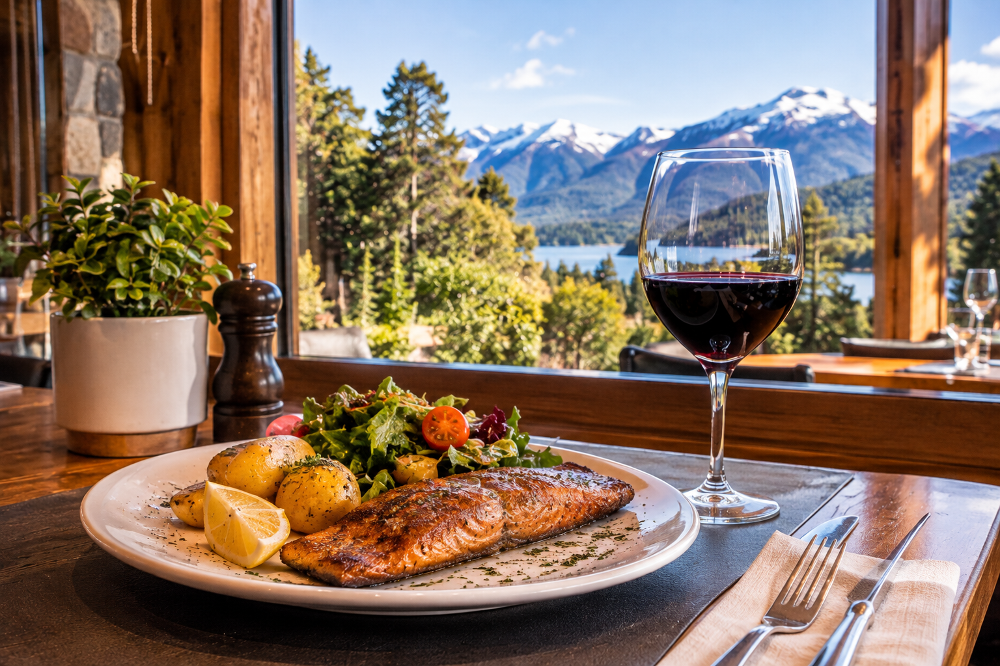
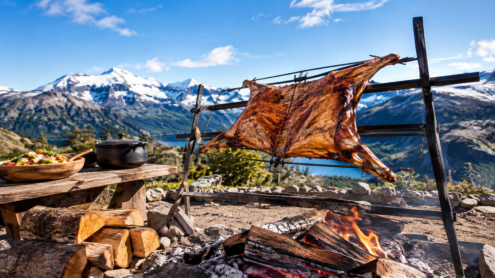

Bariloche
Chocolate, cocina regional y paisajes únicos

Disfrutá de una pausa dulce en el corazón de Bariloche, donde el aroma del café recién preparado se combina con deliciosas tortas artesanales. Sabores de chocolate, frutos rojos y dulces regionales se convierten en protagonistas de una merienda tradicional, ideal para disfrutar mientras contemplás los paisajes de lagos y montañas de la Patagonia.

Disfrutá de una auténtica experiencia gastronómica patagónica en un restaurante con vistas al majestuoso lago Nahuel Huapi. Una cerveza artesanal bien fría acompaña una tradicional picada regional de quesos, fiambres, aceitunas y panes caseros, en un entorno natural rodeado de bosques y montañas.

Una propuesta gastronómica que combina los sabores de la Patagonia con la belleza de sus paisajes. Deliciosa trucha asada, acompañada de papas doradas y vegetales frescos, junto a una copa de vino ideal para realzar sus sabores. Todo esto, frente a una espectacular vista de lagos y montañas.

Viví la tradición del auténtico asado patagónico en plena montaña. Un cordero cocinado lentamente a las brasas, mediante la técnica tradicional del asador, acompañado de sabores regionales y rodeado de imponentes paisajes cordilleranos. Una experiencia que combina gastronomía, naturaleza y cultura local.